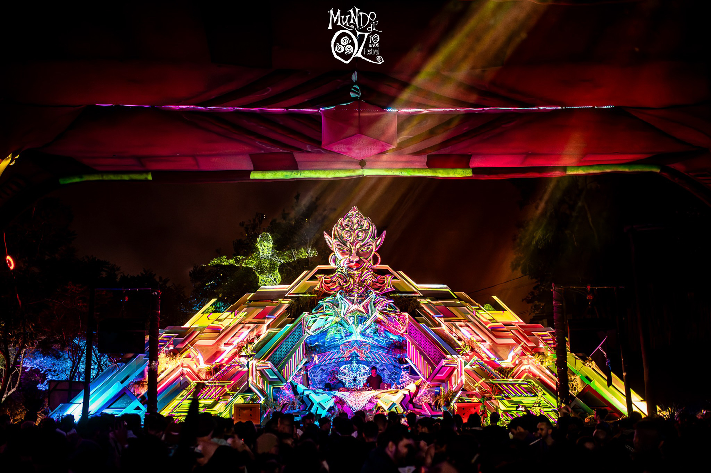
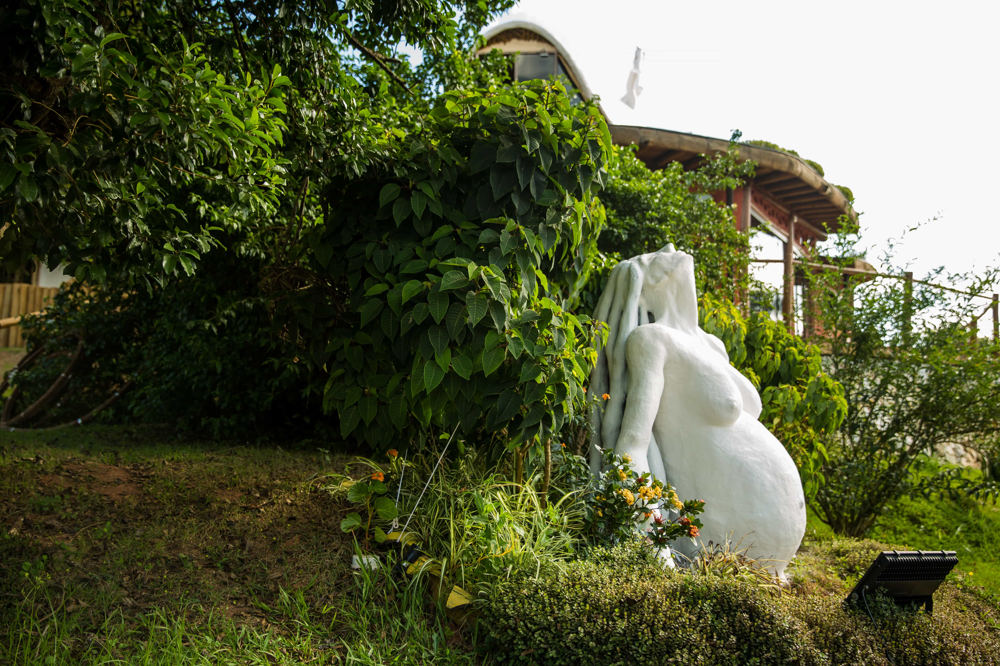
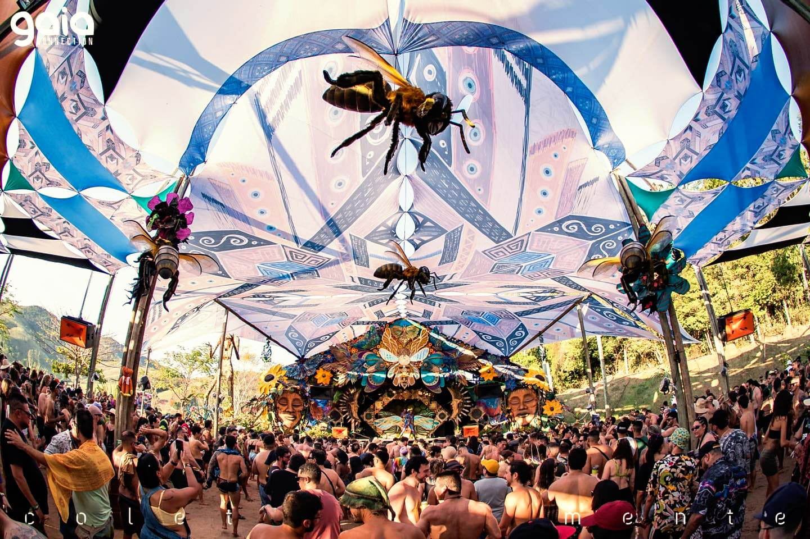
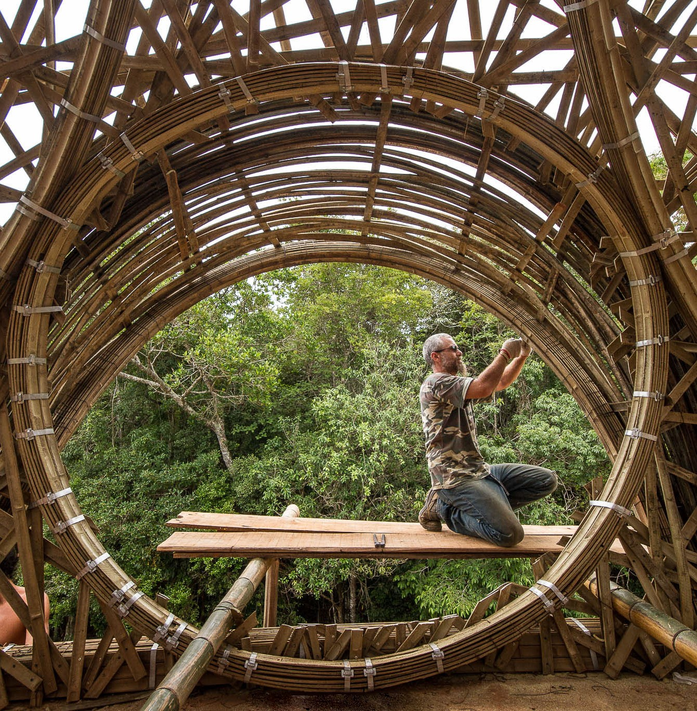
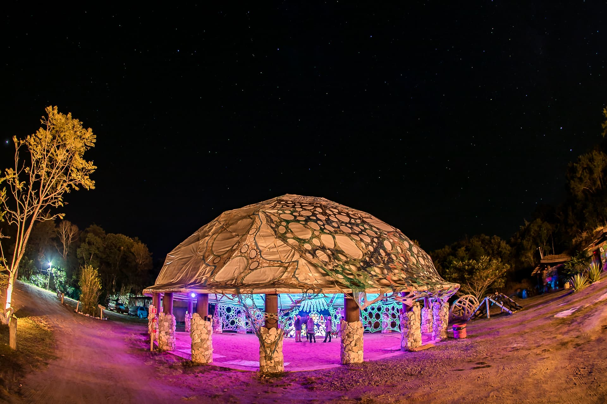
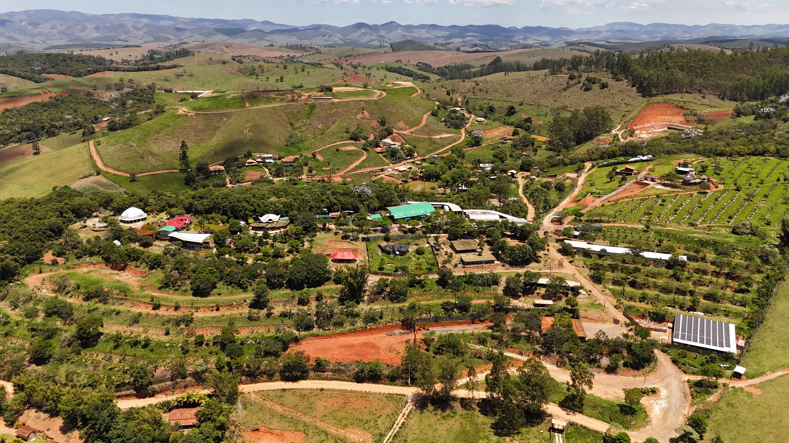

Construindo um Futuro Consciente
Nosso refúgio em Lagoinha/SP, onde Ecologia, Educação e Arte se encontram. Um espaço para se reconectar com a natureza e celebrar a vida em comunidade.
A Aldeia Outro Mundo através de quem conta nossas histórias
Aqui reunimos reportagens, entrevistas e documentários que mostram diferentes perspectivas sobre a Aldeia Outro Mundo. Cada matéria revela um olhar externo sobre nossa conexão com a natureza, educação, cultura e transformação humana.

Música eletrônica transforma vidas na Serra
Projeto aposta na cultura eletrônica para promover inclusão na Região Serrana; em São Paulo, Fabio Defourny Martins, o Defo, se destaca como referência do gênero.
A Aldeia Outro Mundo integra música, sustentabilidade e educação em um modelo que une cultura e responsabilidade ambiental, atraindo visitantes de diferentes partes do mundo.
O espaço passou por um processo de reflorestamento conduzido pela própria comunidade e mantém práticas sustentáveis, como o reaproveitamento de resíduos.
Outro marco importante foi o reconhecimento da música eletrônica como bem cultural em São Paulo, fortalecendo o setor e combatendo preconceitos.
Mundo Sol: descubra como funciona o festival de cura da Aldeia Outro Mundo
O Mundo Sol Festival é uma experiência imersiva que reúne música, vivências terapêuticas e atividades voltadas à expansão de consciência.
Realizado na Aldeia Outro Mundo, o evento conecta arte, espiritualidade e natureza.
Ao longo dos dias de festival, o espaço se transforma em um ambiente de convivência coletiva.
O festival também se destaca por sua proposta sustentável e pela diversidade de públicos.

Precisamos falar sobre bioconstrução e arquitetura sustentável
A bioconstrução e a arquitetura sustentável representam uma forma de projetar e construir espaços que reduzem impactos ambientais e priorizam o uso consciente de recursos naturais.
Na Aldeia Outro Mundo, essas práticas fazem parte da base estrutural do projeto, utilizando materiais ecológicos, técnicas de baixo impacto e soluções que integram o ambiente à construção.
O conceito envolve desde o planejamento das edificações até o uso de energia, água e recursos locais, promovendo eficiência energética e equilíbrio com o ecossistema.
Além da construção em si, a proposta também se conecta a um estilo de vida sustentável, onde a relação entre habitação e natureza é contínua e integrada.
Turismo regenerativo: conheça exemplos para fazer a diferença
O turismo regenerativo propõe uma nova forma de viajar, onde a experiência vai além do entretenimento e contribui ativamente para a regeneração ambiental, social e cultural dos territórios visitados.
Na Aldeia Outro Mundo, esse conceito se materializa em práticas que integram visitantes, comunidade local e natureza em um mesmo ecossistema de aprendizado e transformação.
As atividades envolvem vivências educativas, projetos de reflorestamento e experiências culturais que fortalecem o vínculo entre pessoas e o meio ambiente.
Mais do que reduzir impactos, a proposta busca restaurar e melhorar os espaços visitados, criando um ciclo positivo de desenvolvimento sustentável e consciente.

O que é a Aldeia Outro Mundo?
Localizada em Lagoinha (SP), a Aldeia Outro Mundo nasceu com a proposta de demonstrar que é possível viver em harmonia com a natureza, unindo sustentabilidade, educação, arte e vida em comunidade.
O projeto transformou uma antiga área de pastagem em um espaço de regeneração ambiental, utilizando bioconstrução, reflorestamento, energia limpa e princípios da permacultura como base para seu desenvolvimento.
Além da preservação ambiental, a Aldeia promove cursos, vivências, festivais e experiências culturais que incentivam a troca de saberes, o desenvolvimento humano e a conexão entre pessoas e natureza.
Hoje, o espaço tornou-se referência em ecologia regenerativa e turismo sustentável, recebendo visitantes de diferentes regiões do Brasil e do mundo em busca de novas formas de viver e construir um futuro mais consciente.
Festival de música eletrônica de verdade: veja o guia completo
Muito mais do que um festival de música, a Aldeia Outro Mundo oferece uma experiência imersiva que une natureza, arte, sustentabilidade e convivência em comunidade. O espaço foi planejado para proporcionar conforto e integração durante todos os dias do evento.
O guia apresenta toda a estrutura disponível aos visitantes, incluindo áreas de camping, hospedagens, alimentação, estacionamento, banheiros, espaços de descanso e serviços que tornam a experiência completa do início ao fim.
Além dos palcos e apresentações musicais, o público encontra vivências culturais, oficinas, atividades de bem-estar e ambientes preparados para estimular a conexão entre pessoas e natureza, tornando cada edição única.
Com infraestrutura sustentável e organização voltada ao acolhimento, a Aldeia Outro Mundo consolidou-se como referência para quem busca viver a cultura da música eletrônica de forma consciente e transformadora.

O que você precisa saber sobre sustentabilidade na Aldeia Outro Mundo
A sustentabilidade faz parte de todas as atividades da Aldeia Outro Mundo, orientando desde a construção dos espaços até a produção de alimentos e a gestão dos recursos naturais. Cada escolha busca reduzir impactos ambientais e fortalecer a convivência em equilíbrio com a natureza.
O projeto reúne práticas como bioconstrução, geração de energia solar, captação de água da chuva, tratamento ecológico de efluentes e sistemas de agrofloresta, demonstrando que é possível unir conforto, desenvolvimento e responsabilidade ambiental.
Além da infraestrutura sustentável, a Aldeia compartilha esse conhecimento por meio de cursos, vivências e eventos, incentivando visitantes a conhecerem soluções que podem ser aplicadas em diferentes realidades.
Mais do que um conceito, a sustentabilidade é vivenciada diariamente, tornando a Aldeia Outro Mundo um exemplo de regeneração ambiental, educação e transformação social. :contentReference[oaicite:0]{index=0}


3 princípios da Aldeia Outro Mundo para se inspirar
A Aldeia Outro Mundo nasceu da ideia de que pequenas atitudes podem gerar grandes transformações. Seu propósito vai além da preservação ambiental, buscando inspirar uma forma de viver baseada na cooperação, no respeito à natureza e no desenvolvimento humano.
Entre os princípios que orientam o projeto estão o cuidado com as pessoas, o equilíbrio com o meio ambiente e o fortalecimento da vida em comunidade. Esses valores estão presentes nas construções, nas vivências, nos eventos e no cotidiano da Aldeia.
Mais do que conceitos, esses princípios são colocados em prática por meio da educação, da permacultura, da bioconstrução e do incentivo à participação coletiva, mostrando que sustentabilidade também envolve relações humanas e colaboração.
A proposta é inspirar visitantes a refletirem sobre seus próprios hábitos e demonstra que construir um futuro mais consciente começa com escolhas simples, capazes de gerar impactos positivos para as pessoas e para o planeta. :contentReference[oaicite:0]{index=0}

O que pode e o que não pode na Aldeia Outro Mundo
A Aldeia Outro Mundo adota princípios de convivência que estimulam o respeito entre as pessoas, o cuidado com a natureza e a participação coletiva, criando um ambiente acolhedor para todos os visitantes.
Durante a permanência no espaço, são incentivadas atitudes como colaboração, consumo consciente, preservação dos ambientes naturais e respeito às construções, trilhas e áreas compartilhadas.
Algumas práticas não fazem parte da proposta da Aldeia, como atitudes que prejudiquem o meio ambiente, desrespeitem outras pessoas ou comprometam a experiência coletiva construída pela comunidade.
Mais do que um conjunto de regras, essas orientações refletem os valores da Aldeia e ajudam a proporcionar uma vivência baseada em responsabilidade, harmonia e conexão com a natureza.
Como chegar à Aldeia Outro Mundo
Localizada em Lagoinha, no Vale do Paraíba (SP), a Aldeia Outro Mundo recebe visitantes durante todo o ano e oferece diferentes rotas de acesso para quem vem da capital paulista, do litoral norte e de outras regiões do estado.
Para facilitar a chegada, a Aldeia disponibiliza um mapa com as principais orientações de trajeto, além de recomendações para evitar caminhos inadequados e tornar a viagem mais tranquila.
O percurso até a Aldeia já faz parte da experiência, passando por paisagens naturais da Serra do Mar e proporcionando um primeiro contato com o ambiente que caracteriza o espaço.
Antes da viagem, é recomendado consultar o mapa atualizado e seguir as orientações de acesso para garantir uma chegada segura e sem imprevistos.
